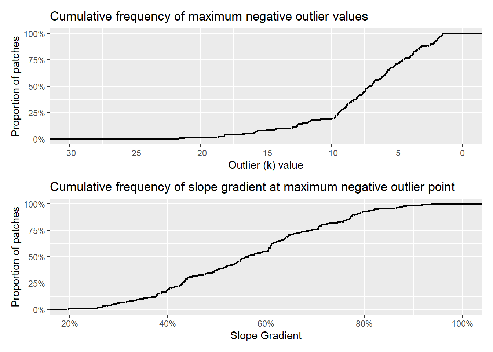

In CoRegistration, we looked at how the frequency distribution of elevation differences between two sequential lidar DTMs, after coregistration, varied with both hillslope gradient and forest-stand height. We documented these variations using the interquartile range of elevation-difference values observed over increments of gradient and stand height. Based on these variations, we defined minimum level of detection (LoD) for elevation changes using Tukey fences: \[ qmin = q_1 - k*(q_3-q_1); qmax = q_3 + k*(q_3-q_1) \tag{1}\] We used a value for \(k\) of 1.5 to set the \(qmin\) and \(qmax\) values to define the LoD. Note that \(q_1\) and \(q_3\), and the consequent \(qmin\) and \(qmax\), vary spatially with changes in hillslope gradient and stand height.
Each cell in the DoD (DEM of difference) has an elevation-difference value \(\Delta e\). Expanding on the concept of a Tukey fence, we calculate a \(k\) value as \[ k = \frac{\Delta e - q_1}{(q_3-q_1)}, \Delta e < q_1 \tag{2}\] and \[ k = \frac{\Delta e - q_3}{(q_3-q_1)}, \Delta e > q_3\] For values within the interquartile range \((q_1 < \Delta e < q_3)\), \(k\) is set to zero. For elevation loss, \(k\) is negative, and for elevation gain, \(k\) is positive. This provides a measure of where the value of \(\Delta e\) at each DoD cell lies within the frequency distribution of all \(\Delta e\) values. Areas with \(k\) values between -1.5 and +1.5 lie inside the LoD \(qmin\) and \(qmax\) values and contain most of the DoD area. The confidence with which we can interpret \(\Delta e\) values as actual changes in elevation and not as random noise or errors increases as the magnitude of \(k\) increases.
Data
Figure 1 below shows \(k\) values outside the LoD envelope for the 2006-2017 lidar overlap in the Post Mortem study area.
Figure 1: k values calculated with @eq-k for the 2006-2017 lidar DTM overlap in the Post Mortem study area.
Agradation along many low-gradient flood plains is evident from the yellow to red patches. Blue colors along some of the steeper stream courses indicate channel incision. Also shown in Figure 1 are the field-inventoried landslide locations from the Post Mortem study (Stewart et al. 2013). Figure 2 below shows the lower-right portion of the shaded-relief image in Figure 1. Zones of incision (green-blue) and agradation (orange-red) are visible along stream channels. Landslide scars (blue) and depositional zones (orange-red) are visible. Some of the excvated road benches and associated side cast constructed after 2006 also show up. There is also considerable noise; small blue and orange patches scattered about, particularly on the steeper slopes.
Figure 2: The lower right portion of @fig-kvalues. The shaded relief is from 2017.
We want to see how k-value patches compare with the surveyed landslide locations. Can we distinguish the landslide signal from the noise? We implemented the following algorithm:
Identify contiguous patches where k < -1.5, the gradient is > 0.35, and accumulation area is < 4000m2.
Find the closest patch to each mapped landslide point within a 30-m radius. Exclude patches with an aspect more than 22 degrees different than that reported for the landslide.
For each matched patch, extend the patch to include adjacent zones with k < -1.5, but without filtering for gradient. Some patches with k << -1.5 included low-gradient zones that appeared to be contiguous with and part of the landslide scar.
From the DoD, get the horizontal surface area and volume of each patch that is associated with a landslide point.
HuntLS outputs a raster file of the mapped patches that matched the inventoried landslides based on proximity and aspect. It also outputs three comma-delimited (csv) files. The file names are derived from the “OutTable” variable specified in the code chunk above. The suffix distinguishes each file.
OutTable_dist.csv. Each record gives the patch ID, the outlier value, and the hillslope gradient for each pixel within all patches matched to a surveyed landslide. This table provides the full frequency distribution of outlier (k) and gradient values included within all the matched patches.
OutTable_match.csv. One record for each matched patch giving the dimensions reported for the field-surveyed landslide, the dimensions of the patch measured from the DoD, and the largest magnitude outlier and slope-gradient values within the patch.
OutTable_nomatch.csv. One record for each surveyed landslide with no matching patch. This reports the field-reported dimensions of each landslide.
We use these tables to determine the frequency distribution of outlier and slope-gradient values associated with observed landslides. We hope to determine the smallest landslide scar that can be resolved with this DoD using the LoD envelope defined with program Align.
Of the {r}n_match+n_nomatch surveyed landslides, HuntLS matched {r}n_match. Figure 3 compares the field-surveyed and DoD-measured landslide scar areas.
Figure 3: Comparison of field-measured and DoD-measured landslide areas. The boxplot shows the distribution of areas for the two sources. The scatterplot shows the relationship between the two sources. The solid blue line is a linear regression fit to the data. The dashed black line is a 1:1 line. The black lines above and to the right indicate relative point densities.
Observed landslide-scar areas span a large range, from {r}match[,min(LSarea)] to {r}match[,max(LSarea)] m2. The DoD outlier-patch areas go from a minimum of {r}match[,min(Area)] to a maximum of {r}match[,max(Area)] m2. The smallest outlier patches may be under estimated, because the patch extended only to outlier values of -1.5 or less, not to all DoD values less than zero contiguous with the patch. In general, the DoD-measured patches tend to be larger than the field-estimated landslide scar size and larger outlier patches correspond to larger field-estimated landslide areas, but with a lot of scatter. Figure 4 below compares the field-surveyed and DoD-measured landslide volumes.
Figure 4: Comparison of field-measured and DoD-measured landslide volumes. The boxplot shows the distribution of volumes for the two sources. The scatterplot shows the relationship between the two sources. The solid blue line is a linear regression fit to the data. The dashed black line is a 1:1 line. The black lines above and to the right indicate relative point densities.
The volumes measured from the DoD match the field-estimated volumes a bit better than the scar areas matched.
Figure 5: Comparison of field-measured and DoD-measured maximum scar depths. The boxplot shows the distribution of depths for the two sources. The scatterplot shows the relationship between the two sources. The solid blue line is a linear regression fit to the data. The dashed black line is a 1:1 line. The black lines above and to the right indicate relative point densities.
At least for this case, the frequency distributions of maximum depths are similar, and there is a general trend for the deeper DoD-measured depths to correspond to deeper field-measured depths, but with much scatter.
I am unsure how much concern to place in the scatter in the scatter plots above. There is some variability between field observers, as described in (Miskovic and Powell 2009). There is also uncertainty in the areas and volumes measured from the DoD, which we can account for when calculating the size of DoD-inventoried landslides.
What about the field-observed landslides that we were unable to resolve from the DoD?
Thresholds
These results using program HuntLS suggests that we can use the outlier raster to identify potential landslide scars. We can use the outlier patches that matched field-surveyed landslides to characterize the frequency distribution of outlier and slope gradient values within a landslide patch. Our goal is to identify threshold values that can be used to filter the patches to include those most likely to be associated with landslides.
In Figure 6 below, we show box plots of the maximum outlier k value for each patch and the slope gradient at the DoD cell with that maximum maximum k value.
Figure 6: Box and whisker plots of patch outlier and slope values. The left panel shows the maximum absolute outlier (k) value within each patch. The right panel shows the slope gradient at the DoD cell where the maximum outlier occurs.
The outlier raster produced by program Align only plotted k values outside the range of -1.5 to +1.5. We are looking for elevation losses, negative k values, so the maximum absolute k value can be no less than 1.5. A scatter plot with marginal density plots of the values is shown in Figure 7 below. Modal values lie around -10 for k and 65% for gradient, but the distribution of values extend broadly on either side.
Figure 7: Scatter plot of maximum negative outlier (k) values and slope gradients at the maximum outlier point. The black lines above and to the right indicate relative point densities.
Figure 8 below shows cumulative frequency distributions of the maximum negative outlier (k) values from each patch and of the slope gradients at the maximum negative outlier points.
Code
pcum_outlier <-ggplot(data[Type=="MaxOutlier", ], aes(x=Outlier)) +stat_ecdf(geom="step", linewidth =0.8) +coord_cartesian(x=c(-30,0)) +scale_x_continuous(breaks =seq(-30, 0, by =5)) +scale_y_continuous(labels = scales::percent) +labs(x ="Outlier (k) value",y ="Proportion of patches",title ="Cumulative frequency of maximum negative outlier values") pcum_slope <-ggplot(data[Type=="MaxOutlier", ], aes(x=Slope)) +stat_ecdf(geom="step", linewidth =0.8) +coord_cartesian(x=c(0.2,1.0)) +scale_x_continuous(labels = scales::percent) +scale_y_continuous(labels = scales::percent) +labs(x ="Slope Gradient",y ="Proportion of patches",title ="Cumulative frequency of slope gradient at maximum negative outlier point")pcum <- pcum_outlier / pcum_slopepcum

Figure 8: Cumulative frequency of maximum negative outlier (k) values (upper panel) and slope gradients at the maximum negative outlier point (lower panel).
To include all the patches matched to inventoried landslides, we would need to set a threshold for k at -1.5 and for slope gradient no greater than 21%. We can use the cumulative distribution curves in Figure 8 to determine what proportion of the matched landslide points different threshold values would preclude. Using these threshold values to flag patches as candidate landslide sites, we would include 145 of the 151 inventoried landslides in the study area used here, but we would also include many patches that are not landslides. Setting lower thresholds for k (e.g., -10) and higher thresholds for gradient (e.g., 40%) would give us greater confidence that flagged patches are associated with landslides, but would also miss some proportion of actual landslide sites. We will experiment with these thresholds now, but may find that we need to include other factors. For example, we could set different threshold values for different landforms, e.g., inner gorges, terrace margins, hollows, planar slopes, divergent slopes, ridges.
Program LShunter will read the DoD and outlier rasters created by program Align and a gradient raster created by program HuntLS. (LShunter uses the gradient raster created by HuntLS because gradient values depend on the length scale over which they are measured and we want to ensure that the same gradients are used here as in HuntLS).
Code
# LShunter can use the same DoD, Outlier, OutGrad, and Accum inputs as HuntLS, # so we won't repeat those here.threshold1 <--5.0threshold2 <--1.5min1 <-0.2min2 <-0.1maxAccum1 <-1000.maxAccum2 <-1000.minSize <-10.# minimum patch size, see figures aboveOutPatch <-paste0(path, "patch_test")OutGrad <-paste0(OutGrad, ".flt")ScratchDir <-"c:\\work\\scratch"executable_dir <-"c:/work/sandbox/landslideutilities/projects/LShunter/x64/release"#returnCode <- TerrainWorksUtils::LShunter(# Outlier,# threshold1,# threshold2,# OutGrad,# min1,# min2,# Accum,# maxAccum1,# maxAccum2,# minSize,# OutPatch,# ScratchDir,# executable_dir) #if (returnCode != 0) {# return(returnCode)# stop("Error in LShunter")#}
References
Miskovic, T., and J. Powell. 2009. “Mass Wasting Prescription-Scale Effectiveness Monitoring Project (Post-Mortem) Quality Assurance/Quality Control (QA/QC) Report.”
Stewart, Gregory, Julie Dieu, Jeff Phillips, Matt O’Connor, and Curt Velduisen. 2013. “The Mass Wasting Effectiveness Monitoring Project: An Examination of the Landslide Response to the December 2007 Storm in Southwestern Washington.” Olympia, WA.